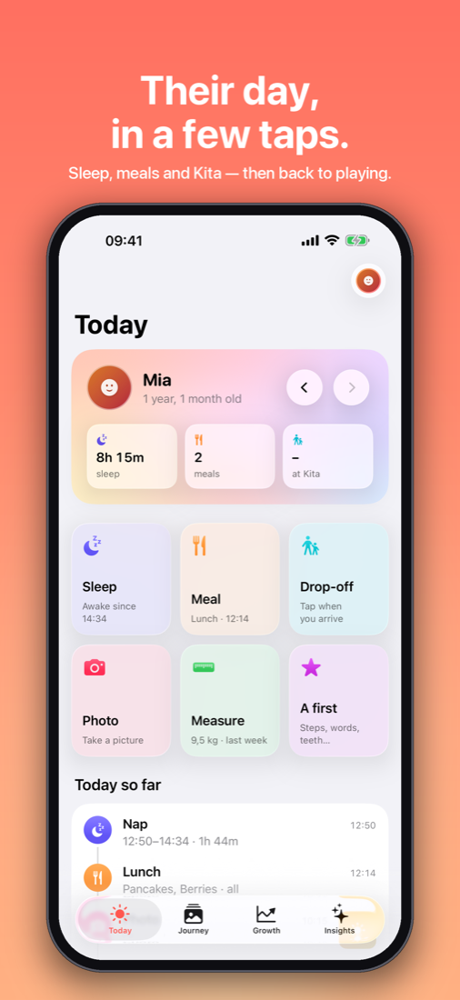
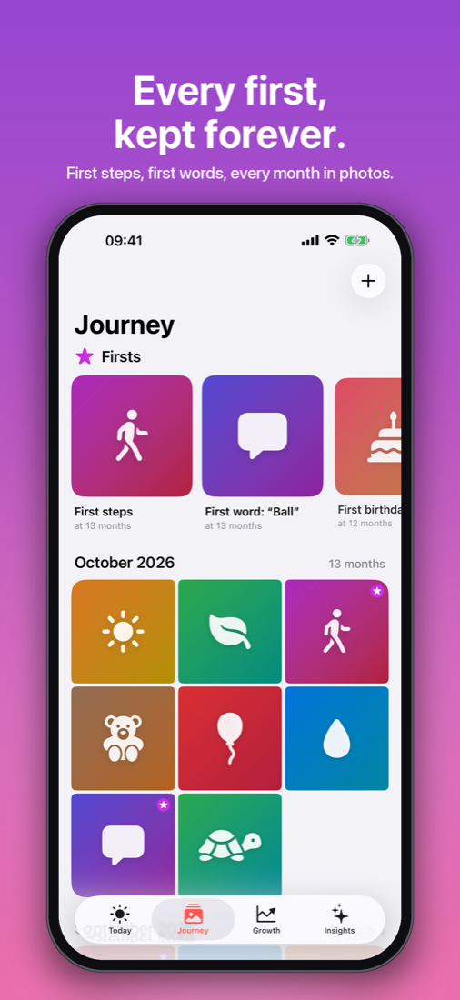
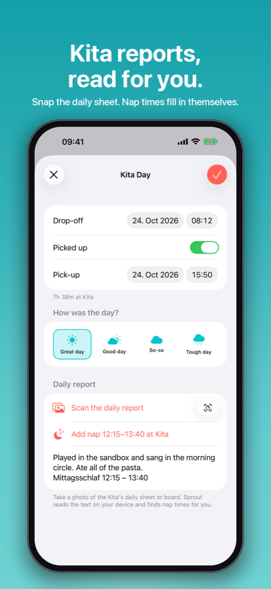

Their first years,
gently kept.
Sleep, meals, Kita days, growth and the little firsts — each in one tap. Then put the phone down and play.



Made to stay out of the way.
One tap, then done
Start a nap, log drop-off or a meal in a second. Sensible defaults fill in the rest.
Your photos, kept
Take pictures in the app, or keep the day's best shots from your library with a single tap.
Kita, automated
A quiet nudge when you arrive at Kita. Snap the daily report and nap times are read for you.
Facts, not guesses
See how your child sleeps, eats and grows, compared with the week before and the WHO curve.
Siri & Shortcuts
“Start a nap in Sprout.” Log from the Action Button, Control Center or an automation.
Private by design
No account, no ads, no tracking. Everything lives on your iPhone and in your own iCloud.